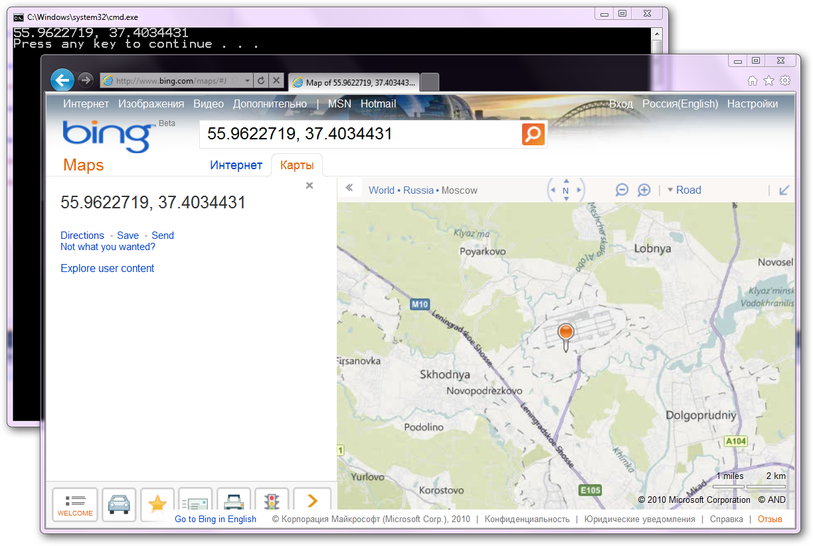

If you running a Windows 7 machine (even without GPS) you can detect computer location, thanks to Windows 7 Sensors API. So you can create geolocation-enabled applications that can find your computer accurately. To do this Window 7 needs a sensor installed to provide the services with information pertinent to the service. One such sensor is Geosense.
Just compile provided Visual Studio 2010 Solution and press CTRL+F5 to run console application.
Running sample
To run sample on computer without GPS you need to install geolocation sensor, for example
Geosence (http://www.bing.com/search?q=geosence&go=&form=QBLH&filt=all). Then installed don’t forget to enable it at control panel.
Then you run console app, it will try to detect your location via Sensors API and if success prints your coordinates that you can use later.

Windows 7 includes native support for sensors, expanded by a new development platform for working with sensors. The Windows Sensor and Location platform provides a standard way for device manufacturers to expose sensor devices to software developers and consumers, while providing developers with a standardized application programming interface (API) for working with sensors and sensor data.
Read more about Windows 7 Sensors API at http://msdn.microsoft.com/en-us/library/windows/desktop/dd318953(v=vs.85).aspx?